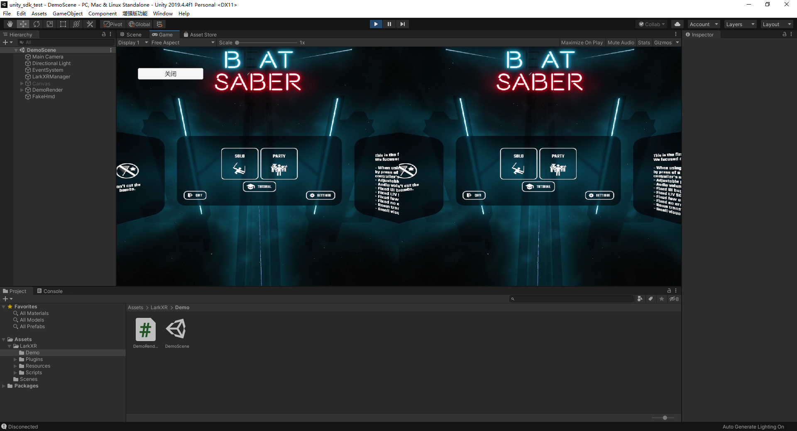

LarkXR Unity3D Client SDK
简介
SDK 适用与开发接入 LarkXR 云渲染的 Unity3D 客户端。可用于接入不同的 XR 设备如 VR 头显，Zspace，手机 AR，AR 头盔等。
云端应用使用 OpenVR/OpenXR 开发。
SDK 封装 LarkXR 系统业务逻辑和流媒体交互能力。获取应用列表，后台上下线等。
SDK 输出云端渲染好的左右眼纹理，应用应该给 SDK 提供最新的姿态信息和手柄等控制信息。
支持平台
- [:heavy_check_mark:] Windows X64
- [:heavy_check_mark:] Android Phone
- [:heavy_check_mark:] Zspace (Win64)
- [Doing] Holoens
参考连接：
云渲染效果

快速开始
- 导入 LarkXR SDK 自定义包

- 打开 DemoScene

- 填入 SDK ID
打开 DemoRender.cs, 修改第 38 行。
// 初始化 SDK ID
string sdkID = "你的SDKID。如果没有SDKID请联系商务获取";
if (!XRApi.InitSdkAuthorization(sdkID)) {
int errCode = XRApi.GetLastError();
Debug.LogError("初始化云雀SDK ID 失败 code " + errCode);
}
- 开始使用，填入 LarkXR 服务器地址。

填入 IP 服务器连接正常就可以看到云渲染的效果。
接口
XRManager
手动挂载 XRManager 脚本或者调用 XRManager.Instance 即可获取到 XRManager 单例。
XRManager 将自动初始化。
要注意先设置 SDK ID
// 初始化 SDK ID
string sdkID = "你的SDKID。如果没有SDKID请联系商务获取";
if (!XRApi.InitSdkAuthorization(sdkID)) {
int errCode = XRApi.GetLastError();
Debug.LogError("初始化云雀SDK ID 失败 code " + errCode);
}
代理
通过代理可获取到连接成功关闭，纹理等
onTexture2D,onTexture2DStereo 获取到云端渲染的纹理，分左眼和右眼。要根据设备和平台的具体要求正确显示左右眼的纹理。
// 监听连接关闭
XRManager.Instance.RenderManger.onClose += OnClose;
// 监听连接成功
XRManager.Instance.RenderManger.onConnected += OnConnect;
// 获取到左右眼纹理
XRManager.Instance.RenderManger.onTexture2DStereo += OnTexture2DStrereo;
// 获取到左右眼纹理,注意左右眼拼接到同一张纹理上。
XRManager.Instance.RenderManger.onTexture2D += OnTexture2D;
发送姿态信息
通过 XRApi.UpdateDevicePose 更新姿态信息。
调用 XRApi.SendDeivcePair 表示更新完成可以发送给云端。
在连接成功之后就要发送姿态信息，如果沒有姿态信息云端应用将沒有输出.
void Update()
{
UpdateCamera();
// 每帧发送姿态信息
if (XRApi.IsConnected())
{
UpdateCloudPose();
}
}
OpenVrPose openVrPose = new OpenVrPose(hmd.transform);
openVrPose.Position.y += LarkXR.Config.GetExtraHeight();
XRApi.UpdateDevicePose(XRApi.DeviceType.Device_Type_HMD, openVrPose.Position, openVrPose.Rotation);
XRApi.SendDeivcePair();
云端应用实际使用坐标系与 OpenVr 坐标系相同，需要将 Unity3D 坐标系转换为 OpenVr 坐标系。参考 OpenVrPose
设置项
// config render.
// 基本渲染设置
XRApi.RenderInfo renderInfo = XRApi.GetDefaultRenderInfo();
renderInfo.renderWidth = 1920;
renderInfo.renderHeight = 1080;
renderInfo.fps = 60;
XRApi.SetRenderInfo(renderInfo);
// 设置码率
XRApi.SetupBitrateKbps(50 * 1000);
// 是否输出左右眼是否在同一张纹理上面
XRApi.SetUseMultiview(true);
设置 IP
// update android server address;
XRApi.SetServerAddr(Config.GetServerIp(), Config.GetLarkPort());
更多关于设置相关参考 LarkXR/Scripts/UI/UIManager.cs
后台接口
XRManager 将自动开启后台接口请求 task，可通过代理获取到结果
// 获取应用列表成功
XRManager.Instance.TaskManager.onApplistSuccess += OnApplistSuccess;
// 获取应用列表失败
XRManager.Instance.TaskManager.onApplistFailed += OnApplistFailed;
更多关于接口相关参考 LarkXR/Scripts/UI/UIManager.cs